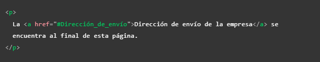
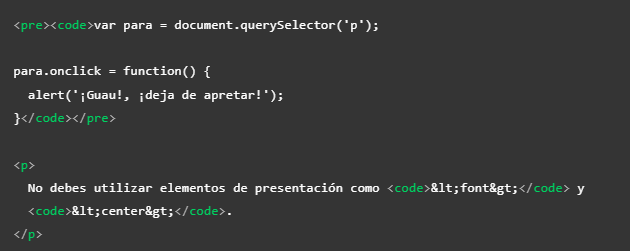
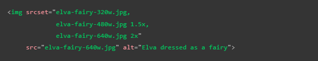
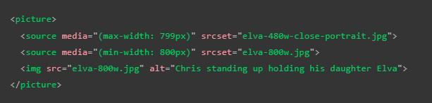
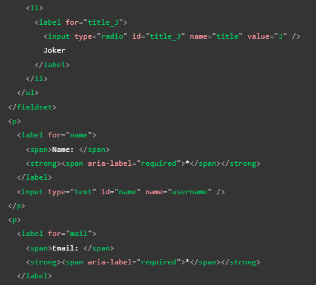
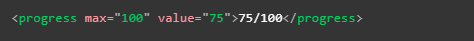

Listado de las etiquetas HTML que deseo aplicar en mis proyectos
Etiquetas de estructura
Estas son aquellas que se utilizan para dividir la paguina en secciones, ests funcionana como contenedores de otras etiquetas y se diferencian segun la funcionalidad del contenido que alvergan
Header
Esta etiquetacumple la función de actuar como un contenedor de la cabecera de la pagina, comunmente se define como una franja horizontal ubicada en la parte superior de la pagina, suel uncluir el titulo o nombre la paguina, así como in logoy puede que un eslogan
Tambienpuede incorporarse como encabezado de seciones como "section" o "article", en cuyo caso unacmante será el ancabezado particular de cada sección
Nav
El rol de esta etiquetaes contener los elementos de navegación principal de la paguina por lo que suele contener enlaces, pestañas y botones, es decir contiene el menú se navegación principal, es común que se llegue a incorporar al encabezado, sin envargo tambien puede ser positivo el manejarlo como un elemto a parte, ya que hace más facil la interacción con los motores de lactura
Nota: Una buena practica es agrupar los elemtos del "nav" en una lista desrodenada de la siguiente forma:
Main
En este elemto se ubica el cuerpo prinipal de la paguina, suele ubicarse directamente dentro de "body", se utiliza una vez por pagina, este se divide en otros conetenedores que conforman el contenido de la paguina
Section: Esta etiqueta se usa para dividir la paguina en secciones, una buena practica es empezar cada encabezado con un titulo de encabezado, incluso se podria usar para dividir un "article" en secciones
Article: Esta etiqueta encuadra un bloque de contenido que tiene sentido por sí mismo aparte del resto de la página, cumple con el objetivo de llegar a ser reutilizable, por ejemplo: una entrada de un block, tambien puede anidarse y vincularse con autores, basicamnete almacena elemtos de contenido independientes
Div: El div se usa para crear seciones o para agrupar contenido de cualquier tipo.
Aside: Este elemto hace referencia a la barra lateral de la paguina, suele incorporarse dentro de "main" pese a que hace referencia a otra area de la paguina
Aside
Este elemto hace referencia a la barra lateral de la paguina, suele incorporarse a la izquierda o derecha e incluso en ambos costados dependiendo del diseño del sitio, suele contener algun tipo de información complemetaria al contenido principal, por ejemplo enlaces, citas, resumenes, bibliografias, algun menú de navegación secundario o simplemete publicidad.
Etiquetas no semanticas
Div
Se trata de una etiqueta de bloque no semantica, en otras palabras se trata de un contenedor que por si mismo no posee ningun valor semantico por lo tanto se usa cundo no se alla un elemto que calce con las necesidades del codigo o cuando no se desea que algun elemto no tenga alguna valor semantico en particular. Cuenta con atrubutos genericos como:
title
id
style
lang: Información del lenguaje
dir: indica la dirección dl texto y las tablas
Tambien cuenta con atributos especificos como:
datasrc:s Enlaza a una fuente de datos externa
datafld: El nombre de una propiedad o columna de datasrc
dataformatas: indica como deben ser tratados los datos obtenidos de datasrc
align: alineación del texto
En otras palabras se puede usar como un contnedor simple para estructurar la pagina atavez de clases o id.
Nota: la desventaja del "div" radica en que es tan facil usarlos que puede mal acostumbrar al programmador, usarlos en exseso conlleva que el mantenimiento y actualización del contenido seran mis complejos de realizar, a la vez que pueden ocacionar un codigo poco legible
Span
Esta el una etiqueta no semantica de texto, por lo tanto su función es incorporarlo en el interior de un texto para hacer posible distinguir algun area del texto sin añadirle algun valor semantico. Esto se puede lograr usando el atributo "class" para poder incorporar css
Nota: por si mismo el navegador no muestra algun estilo en particular al texto que se encuentre en este elemto
Listado de etiquetas
A
Significa "ancla," es la biñeta utilizada para definir los hipervinculos, el texto que se desee mostrar como enlace debera estar ubicado dentro de esta biñeta.
Esta biñeta no solo redirigue al usuario a otra paguina, si no que tambien puede llevarlo a una sección en espesifico de esta, esto se hace añadienso un "#" seguido del id del elemto que se desee ubicar, (todo esto escrito sin espacios), ya que el "#" hace referencia al id de un elemto. De la misma forma tambien se puede re-dirigir a una sección dentro del mismo documento, esto se hace unacmente escribiendo el "# "seguido del id del elemto seleccionado.
A continuación se muestran dos ejemplos el primero es de una re-dirección a un elemto del mismo documeto, y el segundo a una redirección a un area en particular de un documeto externo.

Atributos
href: Es el atributo designado para indicar la dirección http a la quu el encase dirigirá al usuario, puede ser una ubicación interna o externa de la pagina
tittle: Esta etiqueta define el un texto explicativo que hará aparición si el usuario mantiene el raton sobre el enlace, por lo tanto no sera visible para usuarios que navegen usando el teclado o dispositivos tactil
target: Este atributo define la ventana en la que se abrira el nuevo enlace, si se usa el valor "_blank" se abrira la nueva pagina en una pestaña diferete, en cambio si se omite este atributo el enlace se abrira por defecto en la pestaña activa
Nota: cualquier elemeto puede ir dentro de la biñeta "a", por lo tanto casi cualquier casa puede ser convertida en un en unlace, desde contenedores e imagenes etc.
Nota: Es recomedable que los enlaces brinden palabras claves o algun tipo de información sobre la información a la que re-dirigen ya que tanto los usuarios como los motores de lectura escanean la pguina y uno de los elemtos resaltados en los que se guian son los enlaces
Nota: Otros consejos al crear enlaces son: que el texto que los componga sea breve, los textos exsivamente largos no son gratos, tambien es recomendable evitar que el texto de estos enlaces sea repetitivo, ejemplo de mala practica: "Haz clic aquí"
Nota: Es recomedable usar las direcciones relativas de archivos siempre que sea posible, ya que pese a que deja de funcionar si el archivo en el que se encuentra el llamado cambia de lugar, estas son más efiientes en terminos de procesamiento y más legibles en el cosido, por lo que daran un codigo más legible
Descargar un archivo en un enlace
Para indicar que se trata de la descarga de un elemento se utiliza el atributo "download", el cual no solo indicara que el navegador debe descargar el elemento seleccionado si no que tambien define el nombre que se vinculara al archivo al hacerlo (esto lo hace en base al texto que se indique en el atributo)
Enviar un correo mediante un enlace
Esta es otra función que ofrece la etiqueta "a", para aser uso de esta se utiliza el valor "mailto", en el atributo "href" seguido del correo electronico al que se desee que el usuario contacte, esto abrira una ventana de correo electronico con el correo en cuestion selecionado como destinatario, a su vez otra opción es poner el atributo "href" unicamnte con valor de "mailto" esto abrira la venta de correo pero no proveera un destinatario en espesifico
El siguiente es un correo de como se usa el atributo "mailto":
Abbr
Se trata de una etiqueta para definir las abreviaturas, su efecto es que la abreviatura o el acronimo se mostrara con un subrayado puntuado, y al posicionar el raton sobre este se mostrara un texto emergente con la expresión completa del termino
Para definir la expresión completa se utiliza el atributo "title", seguido de la expresión
Ejemplo de visualización
HTML
Adress
Aporta la información de contacto de un article cercano o del elemento padre com el body.
Dentro de este no deben haber etiquetas contenedores, unicamnete debe tener la información de contacto, ya que es una etiqueta simatica.
Nota: Se puede incorporar hipervinculos dentro de este
B
Su función unicamnte es la de mostrar el texro que se encuentre dentro de este en negritas, no añade ningun valor semantico a este
Br
Esta la función de esta etiqueta es muy simple, indica un salto de linea, sin importar realmente en que lugar o contenedor se encuentre siempre tendra el mismo efecto el cual es equivalente a presionar Enter en un editor de texto
Si se utiliza en el interior de una etiqueta "p" (parrafo) esta biñeta aplicara el mismo efecto que tendria un "punto y aparte", por lo tanto el texto saltara a la siguiete linea pero no se distanciara de la linea anterior ni tomara sangria, por lo tato se puede usar para representar lineas cortas como las de un verso.
Details
Actua com un widget de revelación, ya que tiene la funcionalidad de mostrar un texto oculto que se repliega cuando se clickea sobre este, es necesario tener presente que se trata de una etiqueta baste reciente por lo tanto no esta abilitada en verciones antiguas de los navegadores, a su vez puede ser ubicada en cualquier elemento que acepte contenido dinamico
Atributos
Details incluye los atributos globales
open: Este atributo Booleano indica si los detalles serán mostrados al usuario cuando la página se cargue, por defecto el valor es false y por lo tanto los detalles estarán ocultos.
Ejemplo
Efecto
Some details
More info about the details.
Em
Se usa para dar un poco de énfasis o relevancia a algun texto, el texto dentro de esta biñeta se muestra en cursiva
Figcaption
Consiste en un elemto para indicar que un texto esta binculado con una imagen(pie de imagen), ya que es un elemto de texto no es necesario usar el elemto "p" dentro de este, se trata de un elemto con valor semantico
La forma de emplearlo es que junto al elemto de imagen ("img") este contenido en un "figure"
Hr
Esta es otra etiqueta con una función simple, de aplicarse crea una linea horizontal en el contenedor en que se encuentre, se utiliza para crear devicones visuales
Ejemplo de visualización
Primer elemto
Segundo elemto
I
Consiste en una etiqueta para mostrar el texto en cursiva o italica, no brinda ningun valor semantico
Superíndice y Subíndice
En ocaciones puede ser necesario incorporar estos elemtos en algun texto, para ello existen estas dos etiquetas:
sup: Esta etiqueta se usa para el definir el superíndice, lo hace encacillando a esté en su interior
sub: Esta etiqueta se usa para definir el subíndice, lo hace encacillando a este en su nterior
Un ejemplo de ambos casos es el siguiente
Strong
Se usa para darle gran importancia al texto dentro de esta biñeta, se muestra como texto en negritas
Time
Existen muchas formas de plasmar una fecha, sin mencionar que esto puede representarse de forma deferente en algunos lugares, para eso se utiliza el elemto "time", acompañado del atributo "datetime", ya que este elemto tiene la ventaja de que funciona para cualquier formato de fecha (hora, dia, mes, año) así como para las mesclas de estos.
Su uso consiste en ingresar la fecha dentro del atributo "datetime" con el formato adecuado para que sea entendible por el navegador, a su vez dentro de la etiqueta se ingresa la fecha de la forma que sera visible para los usarios, de esa forma el usuario puede visualizar cualquiera que sea el formato de fecha con el que este familiarizado, sin que el navegador presente algun error
Elemplos de aplicación
U
Su función unicamnte es la de mostrar el texro que se encuentre dentro de este subrayado, no añade ningun valor semantico a este
Componenetes de una lista
Ul
La biñeta "ul" define que una lista sea de caracter no ordenada, dentro de ella se ingresa la biñeta "li"con el contenido
Ol
La biñeta "ol" define que una lista sea de caracter ordenada, dentro de ella se ingresa la biñeta "li"con el contenido
Li
El elemento li del ingles item list o elemento de lista declara cada uno de los elementos de una lista, sin importar si se trata de una lista ordenada o desordenada.
Atributos
li incluye los atributos globales
Eventos
onclick: El evento onclick ocurre cuando se hace clic sobre un elemento. Este atributo puede utilizarse con la mayoría de los elementos
onmousedown: El evento onmousedown ocurre cuando el botón del ratón se pulsa cuando está encima de un elemento. Este atributo puede utilizarse con la mayoría de los elementos.
onmouseup: El evento onmouseup ocurre cuando el botón del ratón se suelta cuando está encima de un elemento. Este atributo puede utilizarse con la mayoría de los elementos.
onmouseover: El evento onmouseover ocurre cuando el ratón se sitúa sobre un elemento. Este atributo puede utilizarse con la mayoría de los elementos.
onmousemove: El evento onmousemove ocurre cuando el ratón se mueve mientras está sobre un elemento. Este atributo puede utilizarse con la mayoría de los elementos.
onmouseout: El evento onmouseout ocurre cuando el ratón se aparta de un elemento. Este atributo puede utilizarse con la mayoría de los elementos.
onkeypress: El evento onkeypress ocurre cuando se pulsa y se suelta una tecla encima de un elemento. Este atributo puede utilizarse con la mayoría de los elementos.
onkeydown: El evento onkeydown ocurre cuando se pulsa una tecla encima de un elemento. Este atributo puede utilizarse con la mayoría de los elementos.
onkeyup: El evento onkeyup ocurre cuando una tecla se suelta encima de un elemento. Este atributo puede utilizarse con la mayoría de los elementos.
Listas de descripción
Esta es otra bariente de las listas, es menos cumún y su sintaxisi cambia:
Dl
Se trata de la biñeta contenedor de este tipo de listas, es decir cumple la misma fución que "ul" u "ol"
Dt
Esta biñeta define el termino o elemnto que sera descrito, los estilos por defecto del navegador lo mostraran con una sangria mucho menor que la de su respectiva descripción
Dd
Esta biñeta alverga la descripción de un elemto, se mostrar con una sangra baste mayor al de otros elemtos
Nota: un elemto puede tener multiples descripciones
Meta datos de una paguina
Meta
Meta se utilizapara incluir y definir los metadotos de la pagina en el header, existen barios tipos de meta que pueden ser interpretados por el navegador
Un uso posible es definir que al ser compartida la pagina web en alguna red social el enlace se visualice con una descripción y alguna imagen predefinida, esto con la inteción de que la vista sea mas llamativa y brinde más información a los usuarios sobre el enlace de la paguina, por lo tanto brinde una mejor experiencia. Para lograr esto muchas redes sociales crean suspropios protocolos de metadatos, los cuales son necesarios incluirlos en viñetas "meta" para lograr este efeto al ser compartidas en un red social
Otros usos pueden ser: definir el autor de la pagina web, esto puede ser ventajoso utilizarlo por temas de contacto con el autor. Tambien puede ser utilizado para incluir una brebe descripción del contenido de la pagina, es bueno utilizar palabras claves ya que esto puede ayudar a que la paguina se posiscione de mejor manera en los buscadores
Atributos
name: se utiliza para espesificar el tipo de metadato del que se trata, es decir el tipo de información que contiene
content:espesifica el contenido del metadato en sí
Nota: una etiqueta meta con el name = description y un atributo content componen la descripción que se puede encontrar debajo del enlace de la pagina en las buscaquedas de google u otros buscadores
Definir iconos personalizados para la paguina web
Para enriqueser el diseño de la web se usan los iconos personalizados, los cuales de usan en diversos contextos
El más comun de estos es el fav.icon consiste en un icono predefinido que se mostrara en la parte del navegador que contiene las pestañas aviertas, y tambien se visualizara al guardar la paguina como favoritos
Para inplemetarlo se necesita guardar la imagen icono en el directorio del proyecto y añadir el siguiente codigo al "head". Un caso de uso real es cear varios "fav.ico", para que se apliquen uno u otro dependiendo del dispositivo desde el cual se vicite el sitio
Nota: Actualmete los navegadores aguantan formatos como png o incluso gif, sin embargo el formato .ico garantiza funcionar incluso en verciones desactualizadas
Nota: Nota: Si tu sitio web utiliza una política de seguridad de contenido (content security policy o CSP) para mejorar la seguridad, la política afecta al favicon. Si te encuentras con problemas como que el favicon no se carga, comprueba que la respuesta a Content-Security-Policy del header para la directriz img-src (en-US) en la cabecera no impide el acceso a este.
Link
Se trata de una etiqueta de metadatos, por lo cual siempre debe estar ubicada em el head de la paguina, esta etiqueta consta de varios usos entre los cuales estan:
Contener los llamados de archivos css: Al uzarse de esta forma es necesario que se acompañe de dos de sus atributos con un valor en particular:
rel="stylesheet": Indica que se trata de la hoja de estilos del documento
href=: Como siempre este debe contener la ruta al archivo css en cuantión
Dependiendo de la verción del lenguaje que se maneje tambien puede ir acompañado de otros atributos complementarios como por ejemplo type="text/css"
Script
Esta biñeta se usa para introducir codigo javaScript al documento, ya sea haciendo referencia a un archivo externo, para lo cual se usa el atributo "src" para definir la ruta del archivo. O incluyendo el codigo directamente en el interior de la biñeta, en este caso no se utiliza ningun atributo en particular
Definir un Idioma
Es muy recomendable indicar el idioma en el que esta escrito el contenido del sitio web, esto con el fin de que los buscadores y servcios puedan ubicar y trabajar de mejor forma con nuestro proyecto en base a las preferebcias linguisticas del usuario:
Para esto es necesarioincluir el atributo "lang" dentro de la biñeta "html" del ducumento, el valor de este atributo debe ser un codigo ISO, el cual define cal es el lenguaje a utilizar
En HTML5 el atributo lang es aplicable a cualquier elemento html, por lo que se puede definir un lenguaje en particular para un elemeto en espesfico, e incluso aplicar más de un lenguaje en la paguina de la siguiente forma:
De esta forma los buscadores pueden entender perfectamente los lenguajes he incluso aplicar la pronuciación correcta en el caso de que se usa alguna acción de lectura en la paguina
En el caso de tener definido un lenguaje y necesitar aplicar otro en algun lugar serai así:
Si se diese el caso de ser necesario usar tansolo algunas palabras en otro lenguaje tambie se puede usar el elemeto "span" con el atributo "lan" para definir el leguaje de solo una fracción del texto de la siguiente manera
Nota: para saber el codigo de cada lenguaje basta con buscar "codigo ISO paises" en google
Visualizar codigo en la paguina
En ocaciones pudiese ser necesario representar algun codigo para el usuario, pero al tratarse de simbolos interpretados por el navegador no es posible incorporarlos sin más en el texto, para esto se utilizan diveroso metodos que seran desenglosados a continuación:
Inclusión de caracteres especiales en HTML
Algunos simbolos forman parte de la sintaxis del codigo html, estos son llamados caracteres especiales, por ello para hacer posible su integraciaon a un texto, si se diese el caso, se crearon unos valores referenciales que al ser interpretados por el navegador arrojan como resultado dichos simbolos especiales
Representar codigo Informatico
Para estos casos se utilizan las siguientes etiquetas:
code: Esta etiqueta se utiliza para mostrar literalmente el codigo que esta etiqueta encapsule, en otras palabras cualquier codigo que se escriba dentro de esta etiqueta no sera interpretado por el navegador, si no que a su vez sera mostrado al usuario
pre: por defecto el navegador no tiene en cuanta los espacios en blanco extra que se ingresen en el codigo, sin embargo justo ese es el efecto de esta biñeta, en el texto que se ingrese en el interior de esta el navegador plasmara toda la estructura, incluyendo saltos de linea y tab entre otros
kbd: Esta etiqueta muestra al texto dentro de esta con una fuente que se reserva particularmete para representar entradas de datos en el teclado o en el navegador (comandos de teclas)
samp: Esta etiqueta muestra al texto dentro de esta con una fuente que se reserva particularmente para representar salidas de datos de un programa del navegador
Ejemplos de las biñetas
Codigo:

visualización
Elemtos Multimedia y de Inserción
Audio
Se trata de una etiqueta para reproducir audio en la pagina, se utiliza de una forma similar a la etiqeta video, Debido a las patentes que poseen algunos formatos de audio no todos los navegadores pueden aceptar los mismos formatos, en la actualidad son dos los formatos más utilizados en la industria, estos son: "mp3" y "ogg", de modo que para que el archivo de audio este disponible para casi todos los navegadores lo más recomendable es incluir el archivo en cuastion una vez por cada formato, es decir una vez por "mp3" y una vez por "ogg".
Para optimizar esto utilizamos el elemto "sourse", el cual se incluye dentro de la etiqueta "audio", usando el atributo "src" dentro de este, la función de los elemtos sourse esque el navegador pueda elejir el formato de audio que sea compatible con este, para esto usa el atributo "type" del elemto "sourse", este atributo es leido por el navegador para ubicar el formato de audio que es compatible, si el atributo "type" no se incorpora el navegador probara cada elemto hasta encontrar en formato de audio que sea compatible, aumentando el tiempo de ejecución.
La etiqueta "audio" al tratarse de una etiqueta HTML5 existen navegadores que aún no estan capacitados para ejecutarla, por lo tanto la estuctura de esta etiqueta no solo debe de incluir los atributos de "src", si no que tambien a una etiqueta "p" con un mensaje de notificación, este parrafo sera bicible en aquellos casos en los que no sea posible ejecutar el archivos de audio, ya sea por un tema de compatibilidad o de conexión, por lo tanto es recomedablequ esste parrafo contenga un texto de notificación y si de verdad es muy necesario el audio tambien un enlace directo al archivo de audio
Atributos
Autoplay: indica que el audio se reproduza utomaticamnte bien se cargue, no es muy recomendable su uso ya que los usuarios pueden encontrarlo molesto
buffered: Un atributo que se puede leer para determinar qué intervalos de tiempo del multimedia se han almacenado en búfer. Este atributo contiene un objeto TimeRanges (en-US).
Controls: ofrece controles para que el usuario pueda controlar la reproducción
Muted: Hace que los medios se reproduzcan con el sonido apagado de forma predeterminada.
Loop: Hace que el audio comience a reproducirse cada vez que finaliza.Esto puede en ocasiones resultar molesto, por lo que lo mejor es utilizalo solo si es realmente necesario.
Preload: Le indica al navegador que inplementacion podria darle una mejor experienc al usuario, puede tener elguno de los siguientes valores:
none le indica al navegador que el usuario no tendra que consltar el audio, y no sera necesario almacenarlo en cache
metadata le indica al navegador que el usuariotendra que conslutar el audio, es rasonable almacenar los metadatos
auto indica que el audio tiene proridad, es necesario descargarlo aun si el usuario no lo use
Si el preload no esta configurdo su balor sera definido por el navegador,
src:Indica la url del audio que se va a usar. Su uso es opciona ya que tambien se puede usar el elemento sourse dentro del bloque de audio para indicar el audio que se va a insertar
Las compensaciones de tiempo se especifican como valores float que indican el número de segundos que se va a compensar.
Nota: los atributos autoplay y preload no fuerzan al navegador a seguir el valor del atributo, son solo una sugerencia
Nota: los atributos width y height no tienen efecto en un elemto audio, ya que no hay un componente visual que estructurar
Nota: En cualquier momento se puede restablecer al principo el elemento de audio con JavaScript, ubicando el elemento "sourse" por su id y asignando le la propridad "load()"
Incorporar subtitulos
Esto se realiza creando un archivo "WebVTT", este tipo de archivo esta creado con el fin de almacenar cadenas de texto junto con metadatos para indicar en que momento se mostrara cada cadena de texto e incluso información de estilo y posicionamiento. Las cadenas de texto se denominan señales y existen diferentes tipos con diferentes usos:
Subtitules (Subtitulos): Son traduciones de un lenguaje extrnajero usado en le video o audio
Captions (Leyendas): Son transcripciones de dialogos o sonidos significativos para que puedan ser entendidas en situaciones en las que no se puede encuchar el audio
timed descriptions (descripciones cronometradas): Texto para conversión a audio, para atender a personas con discapacidad visual.
Un ejemplo de la vista de un codigo WebVTT seria:
Para que este archivo se muestre junto con la reproducción de mmedios HTML se debe:
Guardar el archivo ".vtt" en el lugar correcto
Enlazar el archivo ".vtt" con la biñeta "strack". La pista debe colocarse dentro de los elentos audio o video, pero después de todos los elementos de origen (sourse)
Usar la biñeta "kind para definir si el archivo se trata de subtitulos, leyendas o descripciones"
El siguiente es un ejmplo del codigo resultante
Nota: en el ejemplo se usa un elemto "video" pero tambien se puede usar con uno "audio"
Nota: Se puede usar JavaScript para habilitar el boton de subtitulos, y elegir entre por ejemplo varios lenguajes
Nota: Los navegadores se nutrenespecialmente del texto, eso incluye incluso a los suntitulos de un elemto multimedia, lo cual le permite al nevegador vincularse incluso con el fracmento del elemto multimedia que coincida con la busqueda
canvas
Se usa para crear graficos atravez de comandos javaScript, tambien se puede usar para crear animaciones y hacer composiciones de fotos.
una etiquetabastante reciente asi que solo esta disponibles en verciones recientes de los navegadores
Atributos
width: Se trata de la anchura del elemento, el valor predeterminado es de 300px
height: Se trata de la altura del elemento, el valor predeterminado es de 150px
Sobre Accesibilidad
El elemento canvas no provee ninguna información adicional sobre los elementos que tiene dibujados. El contenido de la etiqueta canvas no se muestra a los lectores de pantalla como otras etiquetas semánticas. Como regla general, deberías evitar utilizar canvas en un sitio accesible.
Embed
Representa junto con el elemento "object" es una herramienta de incrustación de proposito general, en otras palabras se diferencia de "iframe" ya que "embeb" puede incrustar multiples tipos de contenido externo que incluyan tecnologuías de complemeto como Java Applets y Flash, en otras palabas puede ejecutar contenido externo y sus plug-in
Nota: Un plug-in (complemeto) es un software que permite que el navegador ejecute un elemento con el cual no es compatible de forma nativa
En sí el "embeb" es una tecnologuía heredada por HTML5, no es verdaderamente usado ya que los subprogramas con plug-in no se utilizan desde hace algunos años, pese a esto se puede dar alguna sircunstancia de que se encuentre como puede ser en intranets o proyectos empresariales.
Atributos
Embed incluye los atributos globales
height: altura mostrada en px
width: ancho mostrado en px
src: La dirección URL del recurso que se está incrustado
type: El tipo MIME que se va a usar para la selección del plug-in para crear una instancia
Figure
Es una etiqueta HTML5, se trata de un contenedor con la función de vincular una aimgen con un texto de pie de imagen, cumple un roll semantico
La forma de emplearlo consiste en que este elemto contenga en su interior el elemto "img" y el elemto "figcaptión"
Iframe
Esta biñeta se utiliza para incorporar documetos web en el documeto actual, esto es bueno para poder incluir contenido de terceros sobre el cual no se tenga el control web dentro de la nuestra, por ejmplo de esto esta el siguiente video el cual pese a visualizarse en esta paguina realmete ningun elemto de este se encuentra en la paguina, en su lugar se tomo una sección directamente de la paguina de youtube y se inserto aquí de la siguente manera:
Primero que nada recordemos que youtube brinda la opción de incrustar videos en otras paguinas web muy facilmente atrabes de los siguientes pasos:
Primero nos diriguimos al video que deseamos incorporar
Luego hacemos clic en el boton "Compartir"
selecionamos la opción de "insertar", y se nos brindara un codigo HTML con la etiqueta "iframe" ya incorporada (podemos configurar algunas cosas sobre el como queremos que se visualise el video en nuestra paguina)
Copiamos el codigo y lo incrustamos en el archivo HTML deseado
El resultado es el siguiente
Google Maps tambien permite hacer algo muy similar, de la siguiente forma
Bamos a Google Maps y buscamos el mapa que deseamos incorporar
Hacemos clic en el menú del la esquina superior izquierda de la paguina
Selecionamos "Compartir o insertar mapa"
Selecionamos la opciaón de "insertar", la cual noz dara un codigo HTML ya estructurado
Copiamos el codigo y lo insetamos en nustro archvo HTML para incorporarlo
Nota: Es muy importante tomar en cuanta el tema de los derechos de autor al usar un "iframe", lo mejor es nunca mostrar contenido del que no se sea el propietario o el duejo brindado un consentimiento por escrito, en el caso de que el contenido sea licensiado se deben optener y cumplir los terminos de la licencia
Atributos
allowfullscreen: Si está configurado, el "iframe" se puede colocar en modo pantalla completa usando el Full Screen API
Frameborder: Al asignarle un valor de "1" añade un borde alrededor de todo el elemto incrustado, su balor minimo es "0", actualmete no es recomedable su uso ya que se obtiene el mismo o mejores resultados con CSS
Src: Al igual que en los elementos "video", "audio", "img" Contiene la ruta que apunta al documento a incrustar
Contenido de reserva: Al igual que un elemto "audio" o "video" el "iframe" incluye un texto que se mostrara en caso de que el navegador no soporte esta biñeta (actualmete es poco probable que se encuentre un navegador que no lo ejecute), se incorpora mediante un elemto "p" dentro de la etiqueta de apertura y de cierre del "iframe" (Suele contener un enlace al documeto que se pretendia insertar)
width: Define la anchura del elemto
height: Define la altura del elemto
sandbox: Este atributo solicita una mayor configuración de seguridad en el "iframe" (Requiere versiones de navegadores más recientes)
Nota: Es recomendable establecer el atributo "src" con JavaScript luego de que se carge el contenido principal para de esa forma la paguina la paguina se pueda usar antes y cargue de forma más rapida
Seguridad
Los "iframe" son "Vectores de ataque" es decir objetivos de ataque de crakers, por lo tanto pudiesen llegar a ser vulnerabilidades en una paguina web, para esto se han desarrollado varios mecanismos y buenas practicas para hacerlos más seguros.
Configurar el Servidor: Una de estas practicas consiste en incluir en el servidor en el que albergue la paguina una configuración para evitar que la paguina sea incrustada en "iframe" ya que de esta forma se evita que se robe el contenido de la paguina y otros lo reclamen como propio o que inserten el sitio web en una paguina maliciosa para robar información del usuario, sin mencionar que el costo del ancho de vanda consumido por ejecutar el "iframe" correria por parte de la paguina que esta siendo insertada.
Aplicarlo solo si es necesario: Ya que los "iframes" representan un sierto riesgo siempre es bueno limitar su uso a solo aquellos casos en los que sea necesario su implemetación.
Usar HTTPS: HTTPS es la verción encriptada de HTTP, pese a su costo se deberia de incorporar a la paguina web siempre que sea posible, ya que brinda dos grandes ventajas:
Reduce las posivilidades de que el contenido remoto sea manipulado mientras se encuentra en transito
Impide que el contenido manipulado acceda al contenido padre y viceversa
Nunca se deberia de insertar contenido de terceros mediante el HTTP, debido al gran peligro que conlleva, una buena solución es GitHub pages el cual permite usar HTTPS por defecto, por lo tanto no es necesario tramitar el sertificado de seguridad
Siempre usar el atributo "sandbox": Basicamente consiste en brindarle al elemto y su contenido unicamnte los permisos necesarios para hacer su trabajo, un contenido sin restricciones puede hacer muchas cosas como por ejemplo ejecutar JavaScript, es por eso que se restringe la funcionalidad del elemto y su contenido para reducir las opciones de un craker, El atributo "sandbox" por defecto aplica todas las restricciones posibles al elemento "iframe" pero de ser necesario se pueden volver a conceder permisos uno por uno.Un recordatorio de seguridad importante es nunca conseder el permiso de allow-scripts como allow-same-origin ya que estos eventos pudiesen saltarse las medidas de seguridad y ejecutar Scripts para desactivar el "sandbox" por completo
Nota: sandbox no evita que un usuario pueda ser engañado por contenido malicioso, si existe alguna posibilidad de que el contenido pudiese ser malicioso lo mejor es publicarlo desde un dominio diferente al principal
Configurar directivas CSP: Esto es con exactitud la configuración de servidor que se nombro con anterioridad, consisten en programar un envio de encabezados HTTP (metadatos) para evitar que la paguina web se presente en un iframe
Nota: Una buena regla de oro para la seguridad web es "Nunca puedes ser demasiado cauteloso. Si lo hizo, verifíquelo de todos modos. Si alguien más lo hizo, asuma que es peligroso hasta que se demuestre lo contrario".
Img
Esta etiqueta tiene la función de vincular archivos de imagen para que se visualicen en la paguina, para esto se utiliza el atributo "src"
Atributos
src: lugar en el que se almacena la URL del archivo de imagen
width: Define el ancho en la imagen
height: Define el alto en la imagen
alt: Se trata de un texto alterno que describa la imagen, se usa en aquellas situaciones en las que la imagen no pueda ser mostrad, por ejemplo si existe algun error en la carga de las imagenes, o si se utiliza algun motor de lectura en la paguina
title: Asigna un titulo a la imagen, sin embargo no es muy utilizado ya que unicamnete muestra el titulo si se posiciona el raton sobre la imagen, a la ves que puede causar errores en los motores de lectura
Nota: Los motores de busqueda tienen en cuenta el texto alternativo al realizar alguna, pueden hacer coincidir la busqueda con este texto
Nota: desactivar las imagenes es una actividad común en lugares con poco ancho de banda o un costo de internet muy alto, en estos casos el "alt" es muy utli
Nota: normalmente se utiliza el width y el height en css, sin embargo si se usa en html, la paguina recervara el aspacio asignado para la imagen aun si esta aun no a termanado de cargar
Imagenes Adaptables
En la web existen dos tipos de formatos de imagen, los vectoreales y los rasterizadas estas ultimas son los formatos como png y jpg los cuales consisten en codigo que le idica al navegador la posición de cada pixel que conpone la imagen, por ello es que la imagen se puede distorcionar cuando se altera el tamaño o proporción de esta, ya que el navegador seguira esta estructura sin importar que, empezara a hacer ajustes para seguir cumpliendo con eta estructura.
Debido a esto es que el como se aprecie una imagen en nuestra paguina se vera enormemente determinado por el dispositivo del que se ingrese y por lo tanto por el tamaño de la pantalla de este, por ejemplo en si agrandamos una imagen para que cumpla con un tamaño adecuado para visualizarse desde una gran pantalla es muy probable que esta pierda calidad y se pixele, por otro lado si tomamos la misma imagen y la reducimos hasta poder visualizarla adecuadamente en un telefono movil es probable que al ser tan pequeña no podamos apreciar adecuadamente el contenido de esta.
A esto es que se refiere una imagen adaptable, se trata de ajustar la imagen al tamaña en el que sera visualizada, para ello la solución que se encontro consiste en incorporar varias imagenes en un elemto img cada una editada para visualizarse adecuadamente en un diferente radio de pixeles, por defecto este solo permite vincular una imagen por uso, debido a esto existen los atributos "srcset"y "sizes"
srcset: Define el conjunto de imagenes y su tamaño que el navegador podria eleguir segun el cual sea la más conveniente para el dispositivo, la estructura para separar cada conjunto de información es con una coma, cada conjunto de información esta compuesto por:
El nombre del archivo de imagen
El ancho intrinseco de la imagen en pixeles, este sera el tamaño real de la imagen, es importante tener en cuenta que se utiliza la unidad "W" no "px" como en otros casos
Size: Define el conjunto de condiciones de medios en los que se muestra cada imagen, por ejemplo el ancho de la pantalla, por lo tanto define en que hancho de pantalla seria correcto mostrar cada imagen, esta compuesto por:
La condición de medios en la que se indica mostrar cada image por ejmplo: (max-width: 600px)
El ancho que finalmente ocupara la imagen cuando la condición de medios se cumpla, por ejemplo: (440px.), por lo general esta se define como menor al ancho de la pantalla para no afectar la experiencia del usuario
Nota: En el ancho de la ranura se debe indicar una longitud abosuta (px, em) o una relativa (porcentaje),
EL siguente es un ejemplo de codigo, se puede apresiar que el ultmo conjunto de datos en el atributo "size"no posee condición de medios, esto se debe a que es el caso por defecto que se utilizara si ninguno de los casos anteriores se cumple, es importante tener en cuanta que el orden de los elemtos ya que el navegador eleguira el primer caso que sea compatible e ignorara todo lo que este posterior a este.
En este codigo el navegador hace lo siguiete:
Verifica el ancho del dispositivo
Buscara la primera condición de medios que se cumpla
Verificara la medida dada a la imgen en esa consulta de medios
Cargara la imagen en el atributo "srcset" que mejor coincida con la medida asicnada para la imagen
Los navegadores desactualizados que no soporten esta caracteristica simplemete la ignoraran y continuaran con la carga comun del atributo "src"
Una imagen en disco de 480px simepre tendra un tamaño mucho menor que una de 800px de ese modo se puede ahorrar ancho de banda y tiempo decarga al iniciar la paguina web
Nota: Nota: Algunos dispositivos moviles mienten sobre el ancho de su pantalla lo cual no es muy util para diseños receptivos, incluyendo (meta name="viewport" content="width=device-width") entre los metadatos de la paguina los abligas a utilizar su ancho real
Cambiar la resolución de la imagen
Otra forma de mejorar el consumo de ancho de banda así como el tiempo de carga de nuestra paguina es el de ofreser como opción al navegador la misma imagen pero con diferentes resoluciones, para esto se utiliza un metodo similar al anterior, es decir se utiliza el atributo "srcset" haciendo referencia a multiples imagenes, con la diferencia de que en esta ocación el tamaña en pixeles de las imagenes no es diferente, si no que se diferencia entre sí por la calidad de cada una.
Esto se realiza con la intención de que el navegador detecte la resolución a la que esta trabajando el computador y selecione la imagen acorde a esta, por lo tanto si el computador esta configurado con una resolución alta el navegador seleccionara una imagen con buena resolución, por otro lado si la configuración es para una resolución baja el navegador seleccionara la imagen con menor resolución, esto cobra sentido cuando tenemos en cuenta el espacio en memoria de cada imagen, ya que mientras mayor resolución mayor sera el peso de la imagen, de este modo podemos buscar la eficiencia de recursos cargando solo los que sean necesarios en base al dispositivo desde el que se ingrese, un ejemplo de este codigo seria el sigueite:

Object
Representa junto con el elemento "embed" es una herramienta de incrustación de proposito general, en otras palabras se diferencia de "iframe" ya que "object" puede incrustar multiples tipos de contenido externo que incluyan tecnologuías de complemeto como Java Applets y Flash, en otras palabas puede ejecutar contenido externo y sus plug-in
Nota: Un plug-in (complemeto) es un software que permite que el navegador ejecute un elemento con el cual no es compatible de forma nativa
En sí el "object" es una tecnologuía heredada por HTML5, no es verdaderamente usado ya que los subprogramas con plug-in no se utilizan desde hace algunos años, pese a esto se puede dar alguna sircunstancia de que se encuentre como puede ser en intranets o proyectos empresariales.
Picture
Se trata de un elemto contenedor al igual que "audio" y "video", que contiene varios elemtos de origen los cuales proporcionana varias fuentes diferentes para que el navegador elija entre ellas, este elemto se utliza para volver las imagenes en elemtos responsive, la estructura del elemto es la siguiente:

Como se puede observar el elemto "picture" esta compuesto por varios elemtos "sourse", de los cuales cada uno llama a una imagen alternativa a disposición del navegador, estos elemtos contienen el atributo "media" el cual define las condiciones de medios bajo las cuales se ejecuta cada imagen alternativa, así como tambien poseen el atributo "srcset" el cual contiene el llamado al archivo de imagen edecuado para esas condicones de medios.
En todo caso siempre es necesario incluir el elemto "img" antes del cierre del elemto "picture" esto ya que brinda el "medio" en el cual se mostraran las imagenes así como tambien actuara como un recurso alternativo para aquellos casos en los que algun navegador no sea conpatible con el elemto "picture".
Para crear images responsive no se puede utilizar JavaScript, esto es ya que lo primero que el navegador carga el HTML, eso incluye las imagenes, si hacemos que se analise el ancho de la pantalla con JavaScript o CSS para cuando estos sean interpretados las imagenes ya estaran siendo cargadas, por lo tanto seria igual a seleccionar cual elemto se utilizara luego de averlo descargado, en este caso se produsiria una sobrecarga de los elemetos, este seria el peor de los casos para una elemto responsive
Tambien podemos usar el elemto "picture" y el elemto "sourse" de una forma más tradicional para los navegadores antguos, la cual es utilizando los atributos lo atributos "type" "size" por ejemplo:
Algunas cosas a tener en cuanta son:
El atributo "media" solo se utiliza si se necesita crear imagenes responsive
En el elemento "sourse" solo se puede referenciar imagenes del tipo definido en "type"
Tambien se puede crear listas de referencias de elemtos en los atributos "srcset" y "sizes" separando los conjuntos de datos con una coma
Nota: recordar que el computador simplemete elejira el primer elemto que arroje un verdadero, por lo que la posición de los elemtos es importante
Nota: Tambiens hay que recordar que el atributo "srcset" puede referenciar varias imagens e incluso un atributo de tamaño por lo que se pudiera ofreser un conjunto de imagenes de varios tamaños e incluso diferentes resoluciones, sin embarrgo siendo realistas es poco probable que sea necesario hacerlo
Nota: Cuando utilice "media", no ofrezca también condiciones de medios dentro del atributo de "size"
Video
La etiqueta video fue incorporada en HTML5 por lo que no esta disponible en verciones antiguas de los navegadores así como en aquellos que esten basados exclusivamente en el texto. Esta etiqueta permite incorporar videos facilmente en la paguina, la estructura de este elemto es:
Atributos
Posee diversos atributos, algunos de los cuales son exclusivos de este elemto:
srl: Aligual que en otras ocaciones en este se almacena la ruta al archivo de video a reproducir
Controls: Este elemto es exclusivo de el elemento "video", indica al navegador que se deven de incluir la interfaz de control de video del navegador, tambien se puede usar para crear una propia usando javaScript
El parrafo dentro de la etiqueta Video: Se mostrara en aquellas situaciones en las que el navegador no soporte la etiqueta "video"
width: Define el ancho del recuadro de video en la paguina
Height: Define el alto del recuadro de video en la paguina
Autoplay: Indica una reproducción automatica del elemto mientras la paguina se carga, no es muy recomendable usarlo ya que los usuarios pueden encontrarlo molesto
Loop: Hace que el vídeo (o audio) comience a reproducirse cada vez que finaliza.Esto tambien puede llegar a resultar molesto para los usuarios
Muted: Hace que los medios se reproduzcan con el sonido apagado de forma predeterminada
Poster: La URL de una imagen que se mostrará antes de reproducir el vídeo. Está destinado a ser utilizado para la miniatura del vídeo
Preload: Se utiliza para almacenar en memoria los archivos grandes; Puede tomar uno de estos tres valores:
None: no almacena el archivo en el búfer
Auto: almacena el archivo multimedia
Metadata: almacena solo los metadatos del archivo
Compatibilidad
Ya que se esta incluyendo elemtos multimedia a la paguina entra en bigor un tema basteante importante, el cual es: el formato del elemto. Este es un aspecto indispensable al incorporar videos a una paguina web, esto devido a que existen varias formatos de audio y video, así como varias formas de reproducirlos, por ello dependiendo del navegador que se utilice algunos de estos pueden no ser compatibles, esto puede originar que segun cual sea el formato del elemento que se este incorporando en la paguina este no podra ser visualizado en algunos navegadores.
Esta discrepenacia entre los navegadores se debe a que algunos de los formatos de audio y video estan sujetos a patentes, lo que imposibilita su empleo en aquellos que no se encuentren autorizados, por lo tanto estos navegadores recurren a formatos alternos que les brinden desempeños similares.
A la hora de implemetar un video en la paguina existen en la actualidad dos formatos establecidos: el formato "mp4" (principalmente soportado en Internet Explorer y Safari. ) y el formato "webm"(principalmente soportado por Firefox y Chrome), ya que cada uno sunciona en algunos navgadores y en otros no.
Lo recomendable es que al incororar un video en una paguina web es que se incorpore el elemento una vez por cada formato dentro de la etiqueta "source", es decir se utiliza dos veces el elemento "sourse" con el atributo "srl" en su interior, una ocación para el elemento en formato "mp4" y otra para el elemto en formato "webm" de la siguiente forma:
Esto ya que el elemento "sourse" apunta a la propia fuente del navegador, por lo tanto el navegador elejira el primer formato que este soporte, el elemento "source" tambien cuanta con el atributo "type", al cual le indica al navegador el formato en el que se encuentra cada elemto, al navegador puede leer este atributo y de este modo omitir los formatos no compatibles ejecutando solo los que sea capaz reproducir ahorrando de este modo recursos y tiempo, con la implemenntación de estos dos formatos el video deveria de poder ser ejecutado en casi todos los navegadores
Nota: Como mínimo la interfaz debe incluir una manera de empezar y terminar la reproducción, y ajustar el volumen.
Incorporar subtitulos
Esto se realiza creando un archivo "WebVTT", este tipo de archivo esta creado con el fin de almacenar cadenas de texto junto con metadatos para indicar en que momento se mostrara cada cadena de texto e incluso información de estilo y posicionamiento. Las cadenas de texto se denominan señales y existen diferentes tipos con diferentes usos:
Subtitules (Subtitulos): Son traduciones de un lenguaje extrnajero usado en le video o audio
Captions (Leyendas): Son transcripciones de dialogos o sonidos significativos para que puedan ser entendidas en situaciones en las que no se puede encuchar el audio
timed descriptions (descripciones cronometradas): Texto para conversión a audio, para atender a personas con discapacidad visual.
Un ejemplo de la vista de un codigo WebVTT seria:
Para que este archivo se muestre junto con la reproducción de mmedios HTML se debe:
Guardar el archivo ".vtt" en el lugar correcto
Enlazar el archivo ".vtt" con la biñeta "strack". La pista debe colocarse dentro de los elentos audio o video, pero después de todos los elementos de origen (sourse)
Usar la biñeta "kind para definir si el archivo se trata de subtitulos, leyendas o descripciones"
El siguiente es un ejmplo del codigo resultante
Incrustar imagenes vectoriales
Existen dos tipos de imagenes las rasterizadas es decir todos aquellos formatos comunes com png, jpg y bmp estas estas compuestas por codigo que le indica al computador el donde va cada pixel, este codigo permanecera sin cambio sin importar el tamaño de la imagen por ello al agrandarla se empezara a "pixelear" y ver se borroza, esto ya que el navegador debe de compensar el lugar de cada pixel de la imagen.
El segundo tipo son las imagenes vertoreales, estas estan compuestas por algoritmos que definene la forma y ruta de esta, por lo tanto estos algoritmos pueden ser interpretados por el navegador para definir el como deberia de verse la imagen, podiendo de este modo adaptar la imagen a cambios de sus dimenciones sin que la nitidez de esta se vea afectada. otra caracteristicas es que las imagenes vectoriales son mucho más ligeras que sus contrapartes ya que en vez de contener la inforación de cada pixel solo necesitan contener los algoritmos de esta, El formato en el que se encuentran todas las imagnenes vectoreales es el SVG.
SVG
Se trata de un lenguaje marcado (al igual que HTML) el cual contiene numerosos elemtos para definir las formas que se desean que aparezcan en las imagenes, por lo tanto SVG unicamente esta pensado para marcar graficos, no contenido por ello todos sus elemtos y atributos van enfocados a esto.
El siguente es un ejemplo de codigo y su respectivo resultado:
Puede parecer que el SVG es facil de codificar sin embargo al tratarse de imagenes complejas deja de ser viable el hacerlo a mano, por ello muchas veces se utilizan editores de graficos vectoreales como Inkscape o Illustrator los cuales permiten utilizar heramientas graficas para por ejemplo crear aproximaciones a fotos..
Otras de sus caracteristicas positivas son:
El texto de las imagenes seigue siendo accesible para los motores de busqueda lo que es positivo para el CEO de la paguina
Puedn integrarse muy bien con el estilo de la paguina ya que cada elemto de la imagen es un elemtoal que se le puede dar CSS o scripting atravez de JavaScript
Sim embrago tambien cuanta con ciertas desventajas como:
El codigo puede complicarse rapidamente por que el tamaño y peso de los archivos se vuelve un factor a tener en cuenta, sin mencionar que tambien puede requerir un tiempo de procesamiento considerable
Pueden llegar a ser más dificiles de crear que las imagenes rasterizadas segun cual sea el tipo de imagen que se quiera crear
No es compatible con verciones antiguas de los navegadores
Por estas razones los graficos rasterizados son mejores para imagenes de presición como las fotos, aún así se puede leer este articulo para preparar SVG para la web
Agregar SVG a la paguina
Existen tres formas de hacer esto las cuales son
Incluirlo en un elemto "img"
Esta es la forma más rapida de hacerlo, para esto solo se necesitaria los atributos de width Height para delimitar el tamaño en el caso de que no posea una relación de aspecto inherente
Ventajas
Sintaxis simple con el texto aquivalente en el atributo "alt"
Se puede convertir la imagen facilmente al incluir el "img" dentro de un "a"
El navegador puede almacenar el SVG en la cache lo que resulta en tiempos de carga más rapidos para las paguinas que usen la imagen
Contras
No se puede manipular la imagen con JavaScript
Si se desea incorporar CSS a la imagen se debe de incluir en el codigo SVG de otra forma no tendra efecto
No puede cambiar el estilo de la imagen con pseudoclases CSS (como :focus).
Compatibilidad con verciones anteriores de los navegadores
Ya que las imagenes vectoriales (SVG) solo son ejecutables en verciones recientes de los navegadores, por lo tanto en aquellos casos en los que el usuario acceda a la paguina desde uno desactualizado este no podra visualizar los archivos SVG por ello para exitar que la experiencia del usuario se vea afectada existe una forma de solucionar la compativilidad con estos casos
Para los navegadores que no admiten SVG lo recomendable es hacer referencia a una imagen rasterizada como png o jpg y usar el atributo "srcet" para hacer referencia al archivo SVG, ya que solo los navegadores actualizados reconocen este atributo seran capases de visualizar adecuadamente la imagen SVG mientra que los que no visualizaran la imagen rasterizada, el codigo resultante seria el siguiente.
Tambien se puede incorporar una imagen SVG como imagen de fondo del sitio web usando la tactica de compatbilidad expuesta anteriormente sin embarogo al hacerlo esta sujeta al mismo tipo de restricciones, esdecir no podra ser manipulado por JavaScript y podra interactuar de forma limitada con el CSS, el resultado seria el siguiete
Nota: Si las imagenes vectoriales no se visualizan el el sitio web pudiese deberse a que el servidor no esta configurado correctamente para ejecutarlas
Incluir el codigo SVG en el documento HTML
Otra forma de incluir imagenes SVG en nuestra paguina es incluir el codigo SVG directamente en nuestro documemto HTML, para esto se utiliza la etiqueta "svg", dentro de esta se debe desarrollar todo el texto SVG, ya que seria una mala practica intentar incluirlo fuera de esta, al implemetarlo de esta forma se dice que se esta utilizando SVG en linea; a continuación se muestra un ejemplo de codigo.
Ventajas
Incluir el codigo SVG directamente en el documento HTML ahorra un llamado HTTP por lo que el tiempo de carga se ve un poco reducido
Se puede implemetar el CSS en plenitud, se puede añadir clases e identificadores a los elemtos, De hecho, puede utilizar cualquier atributo de presentación SVG como propiedad CSS.
Usar el SVG en linea es la unica forma en la que se pueden usar interacciones y animaciones CSS en la imagen SVG
Puede usar el elemto SVG como hipervínculo envolviendolo por un elemto "a"
Desventajas
Este metodo solo es oportuno si se utiliza el SVG en un solo lugar, ya que la duplicación hace que el mantenimineto requira muchos recursos
El codigo SVG aumneta el pamaño del codigo HTML
Con este metodo de inclusión el navegador no pogra almacenar la imagen SVG en la cache, por lo que no se se podra aguilizar las cargas futuras del elemto
Se puede incluir un respaldo en un objeto "foreignObject" para aquellos navegadores obsoletos que no puedan aceptar la imagen SVG, sin embargo los navegadores modernos tambien descargaran la imagen de respaldo por lo tanto es necesario analizar si es necesario probocar esa sobrecarga solo para incluir los navegadores desactualizados
Incrustrar el SVG en un elemto "iframe"
Esta es la tercera forma de incluir el SVG en la paguina, aunque definitivamente no es la mejor forma de hacerlo, para plicar este metodo se utiliza un "iframe de forma comun, haciendo referencia al archivo SVG y incluyendo un elemto "img" con una imagen rasterizada para mostrar en aquellos casos en los que el navegador no acepte la viñeta "iframe" de la siguiente forma
Desventajas
Los "iframes" incluyen un respaldo que se muestra en caso de que la biñeta no pueda ser ejecutada por el navegador
A menos que el elemto SVG y la paguina tenga el mismo origen(ruta) no se puede usar javaScript para manipular la imagen
Citas
Citas en bloque independiente
Para estos casos de utiliza el elemento <blockquote>, el cual debe encasillar una etiqueta "p" con la cita, esta se mostrara como un parrafo con sangria a la izquierda y derecha
Tambien es importante utilizar el atributo "cite=' ' """, en este se puede ingresar una URL que apunte a la fuente de la cita
Ejemplo
Nota: Este tipo de cita indica que es una cita ampleada.
Citas en linea
Estas funcionana igual que las citas en bloque, con la diferencia de que se utiliza la biñeta "q", la cual se incorporan dentro del elemento "p", encasillando unicamnte las palabras deceadas, el resultado será que la cita se mostrara entre comillas
Nota: estas indican que se trata de nua cita brebe que no necesita de un salto de linea.
Incorporar la fuente en la paguina
El atributo "cite" parece util pero los buscadores o motores de lectura no hacen nada con el, por lo tanto la mejor forma de incorporar a la fuente en la paguina es utilizando un enlace(a), para esto simlemente incorporamos este elemto en la redacción de forma que el enunciado o el tipo de cita lo permita, con el URL que diriga a la fuente deseada
Tablas
Table
Esta se trata del la etiqueta contenedora de la tabla en si, marca su inicio y final, todos los elemtos de esta se deben incluir en su interior
Una recomendación a la hora de crear tablas es incluir una etiqueta "captión" en su interior, esta actua como el titulo de la tabla, es veneficioso para que los usuarios puedan reconocer el contenido de la paguina rapidamente, esto incluye a los ususarios con porblemas visuales que utilisen motores de leectura, por ello es que se recomienda que el titulo sea una descripción del contenido y que se coloque este elemto directamente debajo de la etiqueta "table" (fuera de la estructura de las celdas)
Td
Este elemto define las celdas de la tabla, dentro de esta etiqueta se encuentra el contenido de la misma, ya sea otros elemtos HTML o algun texto, un aspecto positivo de las tablas es que cualquier otro elemento puede ser alvergado en sus celdas, una caracteristica de las celdas es que por defecto cada celda nueva se ubicara a la derecha de la anterior en la misma fila
Tr
Las tablas se estructuran en base a las filas de la misma,el elemto "tr" almacena en su interior todas la celdas que pertenezcan a una misma fila, por lo tanto cada fila es un conjunto de codigo independiente de otras fila, dentro de este elemto se mantiene la caracteristicas de que las nuevas celdas que se añadan se insertaran de izquierda a derecha
Th
Este elemto define los encabezados de la tabla, basicamente funciona de la misma forma que lo hace una celda común con el extra de incluir un poco de estilos al texto que se encuentra en el interior, esto ya que se vissualiza por defecto en negritas, con el fin de resaltar los encabezados del resto de la información de la tabla, tambien incluye le atributo "scope" el cual permite mejorar la accesivilidad de la tabla, ya que vincula un encabezadocon su respectivos datos de la misma fila o columna, por lo tanto los lectores web pueden trabajar edacuadamente
Profundizando en las tablas
Colspan y Rowspan
Estos atributos se utlizan para aquellos casos en los que queramos que una celda ocupe más de una columna o más de una fila, ambos atributos trabajan con un valor numerico sin decimales, el cual es igual al número de filas o columnas que se desea que ocupe la celda, por lo tanto:
Colspan: Define el número de columnas que una celda puede ocupar
Rowspan: Define el número de filas que una celda puede ocupar
Nota: se pueden usar ambos atrributos a la vez sin problema alguno
Tablas y los estilos CSS
En una tabla tambien es posible incorporar los estilos y clases CSS, sin embargo hacerlo de forma tradicional no es eficiente, ya que una tabla al estar constituida por numerosos elemtos internos seria necesario definir el estilo o una clase en cada uno, para simplificar esta tarea existen los elemtos "col" y "colgroup", esto tiene la función de definir cuales elemento tendran que estilos.
Su forma de uso consiste en el elemto "colgroup" actuando de contenedor del elemto "col", por otra parte el "col" actua vinculando el estilo a una serie de celdas, "col" se define en base a la pososción que tengan las celdas en sus respectivas filas, es decir:
Para la primera celdas de las filas se utiliza un "col", para las segundas un segundo "col", otro para las terceras así sucesibamente, si en algun momento quisieramos que a alguna serie de celdas no se le aplique un estilo iagualmente es necesario incluir su respectivo elemto "col" pero dejandolo vacio para de ese modo seguir llevando la co-relativade de las celdas, ya que de lo contrario se le aplicaria los estilos de otras a estas
Un ejmplo de este es:
El resultado de este codigo es el siguiente
Nota: Se puede usar los atributos colspan y rowspan en el elemento "col" perfectamente
Si se quiera añadir el estilo a las dos tablas seria de la siguiente manera
Nota: "span tambienadopta un valor numerico sin decimales"
Nota: Si se diera el caso de querer dejar una columana vacia se puede usar el codigo de simbolo especial " ", este al ser interpretado se muestra una celda vacia
Nota: En la actualidad no es recomendable el emplear tablas para estructurar la paguina web, esta es una vieja practica que se utilizaba cuando CSS tenia mala compativilidad con los navegadores, actualmente esto es completamente contraproducenste ya que se optiene un codigo más limpio, un contenido más semantico y mejores diseños con la implentación de CSS en la paguina así como con el uso de los contenedores semanticos y no semanticos
Añadir estructura a las tablas
Depeniendo del contenido que se llegue a tratar en la paguina puede que la estructura de nuestras tablas se vuekva más compleja, para todos estos casos existen algunas etiquetas con la espesifica función de definir la estructura de la tabla de forma clara, como tal la aplicación de estas etiquetas no afectan a la accesivilidad de la tabla de ninguna manera, lo que si hacen es ayudar a producir un codigo más limpio, estructurado y entendible a la vez que facilitar la aplicación de estilos CSS en esta, las atiquetas son las siguientes:
Thead
Este elemento es el que define la cabecera de la tabla, en otra palabra alverga todos los encabezados de las columnas aunque en ocaciones dependiendo de la tabla se pudiesen incluir otros elementos en la cabesera
Nota: si se utilizan los elementos "col" y "colgroup" la cabecera debe de ir justo debajo
Tbody
Esta etiqueta es la que define cual será el cuerpo de la tabla, por lo tanto es el lugar en el que se encontrara la mayor parde del contenido, basicamente todo lo que no se encuentre en la cabesera o en el pie de tabla se encuentra en el cuerpo, en codigo, debido a la cantidad del contenido, pudiese crearce y ubicarse al ultimo (despues y por debajo de thead y tfoot) ya que siempre que este dentro de un elemto "table" se visualizara en el lugar correcto
Nota: Tbody aún si no es definido en el codigo los navegadores lo incluyen por defecto, es bueno definirlo uno mismo para tener mejor control sobre la estructura y los estilos de la tabla
Tfoot
Este ultimo elemto cumple con la función de definir el pie de tabla, pudiese por ejemplo tratrse de la ultima fila la cual pudiese contener datos de las filas anteriores, una caracteristica de esta etiqueta es que en codigo se puede crear antes que el cuerpo de la tabla ya que siempre que se encuentre dentro de un elemento "table" se visualizara en el lugar correcto
Nota: Un ejemplo de uso de estas etiquetas para aplicar estilos CSS seria: definir que tanto la cabecera como el pie de tabla se repitan en cada paguina que se muestre, y que el cuerpo de la tabla se muestre en una sola paguina, podiendo desplasarte por él con una barra de desplazamiento
Malas practicas
Anidar tablas: Como se ha dicho anteriormente las tablas pueden contener casi cualquier elemto dentro de estas, incluyendo otras tablas siempre y cuando estas tengan la estructura completa (table), a esto es a lo que se le conose como "anidar", sin embargo el poner una tabla dentro de otra no es una practica recomendable ya que da como resultado una estructura que puede ser dificil de entender para lo usuarios y para los motores de lectura, por lo tanto lo mejor es unicamente hacerlo en los casos que sea estrictamente necesario, ya que el el resto de los casos es probable que con "colspan" "rowspan" se obtenga mejores resultados
Buenas practicas
Usar encabezados de columna y de fila: Esto es recomendable ya que ayuda a que los usuarios puedan interpretar de mejor forma los datos de la tabla, esto aplica incluso para los usuarios con problemas visuales, esto ya que por lo general estos utilizan motores de lectura para interactuar con la paguina, para un motor de lectura interpretar una tabla puede resultar complejo, sin embargo al incluir los encabezados el motor y por lo tanto el usuario pueden interpretar la tabla de una forma similar a como lo hacen alguien sin problemas visuales
Elemento "caption": como ya se ha dicho anterior mente es muy recomendable icluir un titulo para la tabla, ya que ayuda al usuario a descubrir si la tabla le sera de utilidad
Usar el atributo "scope": Este atributo se utiliza en los elemtos "th" y le indica a los motores de lectura que encabezado pertenese a que fila o columna con el fin de que le permitan a sus usuarios leer todas las celdas del encabezado de una vez, esto lo hace atravez de dos valores: "col"(columna) y "row"(fila) como lo hacen en estos ejemplos:
scope tambien posee dos atributos más, "colgroup" y "rowgroup" estos valores definen aquellos casos en los que un encabezado ocupe más de una selda a la vez por lo tanto se utilizan en los casos que el encabezado avarque dos o mas columnas o filas
Atributos "id" y encabezados: Estos atributos tienen una función alternativa al uso del "scope" su forma de uso consiste en asignarle un id unico a cada elemto "th" por otrolado se le asigna un atributo "headers" a todos los elemtos "td", el "headers" debe de contener una lista (separada por espacios) del id de todos los elemtos que actuan como encabezado en esta celda sin importar si pertenesen a una fila o columna, de esta forma se define la posición explicita de cada celda
Nota: para que este metodo funcione adecuadamente se necesita encabezados de columna y de fila
Eventos
Los eventos son acciones o respuestas pre-establecidas que el navegador puede ejecutar al ocurrir un suceso previamente determinado, principalmete la interiacción con un usuario, por ejemplo al hacer clic sobre un elemto.
Los eventos disponibles pueden variar en función del elemto en cuastion, aún así existen algunos eventos quue son de un caracter relativamnte universal, por lo tanto estan disponibles para la mayoria de los elemtos HTNL
Algunos de estos elemtos son:
onclick: El evento onclick ocurre cuando se hace clic sobre un elemento. Este atributo puede utilizarse con la mayoría de los elementos
onmousedown: El evento onmousedown ocurre cuando el botón del ratón se pulsa cuando está encima de un elemento. Este atributo puede utilizarse con la mayoría de los elementos.
onmouseup: El evento onmouseup ocurre cuando el botón del ratón se suelta cuando está encima de un elemento. Este atributo puede utilizarse con la mayoría de los elementos.
onmouseover: El evento onmouseover ocurre cuando el ratón se sitúa sobre un elemento. Este atributo puede utilizarse con la mayoría de los elementos.
onmousemove: El evento onmousemove ocurre cuando el ratón se mueve mientras está sobre un elemento. Este atributo puede utilizarse con la mayoría de los elementos.
onmouseout: El evento onmouseout ocurre cuando el ratón se aparta de un elemento. Este atributo puede utilizarse con la mayoría de los elementos.
onkeypress: El evento onkeypress ocurre cuando se pulsa y se suelta una tecla encima de un elemento. Este atributo puede utilizarse con la mayoría de los elementos.
onkeydown: El evento onkeydown ocurre cuando se pulsa una tecla encima de un elemento. Este atributo puede utilizarse con la mayoría de los elementos.
onkeyup: El evento onkeyup ocurre cuando una tecla se suelta encima de un elemento. Este atributo puede utilizarse con la mayoría de los elementos.
Formularios
Los formularios son herramientas web en los que los usuarios pueden ingresar datos, los cuales pueden ser enviados a una base de datos o aplicados en el lado del ususario (por ejemplo configuracines de la paguina), basicamente son elemtos HTML en los que el usuario puede ingresar datos los cuales pueden ser empleados o almacenados por la paguina. En los formularios los datos ingresados con frecuencia son validados para corroborar que cumplen con los requeriemientos o caracteristicas del caso de uso, no hay que olvidar que los elemtos HTML unicamente aportan la estructura a la paguina, por ello es que todo lo relacionado con funcionalidad (envio de datos, validaciones etc) son realizados empleando JavaScript, a su vez al igual que el resto de la paguia suelen ser decorados con estilos CSS por lo tanto en estos elemtos es muy comun que las tres tecnologuias sean incorporada.
Contenedores de un formulario
Form
Esta etiqueta se trata de un elemto contenedor especializado en contener el formulario, cuanta con algunos atributos espesificos para definir el comportamiento del formulario, si bien todos sus atributos son opcionales se concidera una buena practica el incluir como minimo los atributos: "action" y "method"
Action: Define la ubicación (URL) a la que se deben enviar los datos recopilados por el formulario
method: Define el metodo HTTP en el que se realizara la transferenci de datos ya sea la recepción o el envio de estos
Nota: No se debe anidar un formulao dentro de otro, ya que esto causaria que ambos se comporten de forma impredesible
Los elemtos de un formularios pueden ser utilizados perfectamente fuera de uno, anque no tendan nada que ver con el formulario, pra estos casos si es lo que se desea tambien hay formas de vincularlos a este pese a encontrarte fuera del formulario
Fieldset y Legend
El elemto "fieldset" se trata de un elemto contenedor especializado en agrupar widgets que comparten un mismo proposito, esto con fines semanticos y de estilos
Por otro lado el elemto "legend" se utiliza para etiquetar un elemto "fieldset", esto con el fin de brindar un guía a los motores de lectura, su metodo de emplementación es incorporandolo justamente luego de la etiquet de apertura de "fieldset" y su efecto es que los motores vincularan el valor de "legend" con todos los elemtos dentro de "fieldset", a continuación se muestra un ejemplo de codigo:
Otra caracteristica del elemento "legend" es que su valor se puede anexar a otras elemtos de etiquetados, como se puede ver en el caso anterior, ya que para cada "input" se complementa el valor de su respectivo label con el valor de lengens, por lo que un lector de pantalla leeria: "Fruit juice size + valorLabel" para cada "input"
Nota: Comúnmente los motores de lectura leeran el contenido de la etiqueta "legend" antes que los "widgets" del formulario
Como tal el elemento "fieldset" no altera la funcionalidad del formulario, lo que si hace es mejorar la accesibilidad del formulario para los motores de busqueda, por lo tanto es una etiqueta basada en mejorar la experiencia de personas con discapacidad visual
Li y Ul
Estas etiquetas pos si solas conforman ua lista, sin embargo en los formularios pudiese ser util el incorporaralas para actuar como contenedores para cada sección del formulario, esto se hace con el fin de poder aplicar los estilos CSS de mejor forma, como se puede ver en la siguiete imagen:
Label
Este elemento define los encabezados de los elementos del formulario, la función de este plenamanrte de accesivilidad, tanto para usuarios comunes como para los mototres de lectura, un elemento "label" se debe vincular con el elemento al que este hace referencia, al vincularlo correctamente los motores de lectura pueden funcionar de una forma más entendible para sus usuarios.
Para vincularlo con el elemto controlador se utiliza el atributo "for" con un valor igual al atributo "id" del constrolador al que este hace referencia, por lo tanto el valor de "for" en el label y de "id" del controlador deben ser el mismo, como tal a la hora de expresarlo en codigo existen dos formas de estructurarlo:
La primera se trata de estrucutarar el "label" y "input" como dos elemtos separados
La segunda forma consta de anidar el "input" dentro del elemto "label"
Nota: sea cual sea la forma en la que se estructure en cdigo siempre es recomendable que se vincule los elemtos mediante el "for" y el "id", para asegurar que todos los motores de lectura lo interpreten adecuadamente
Una ventaja de vincular corectamente los label con su respectivo widget es que al hacerse un clic sobre este automaticamante se activa el widget, esto es muy util para el diseño y accesivilidad del formulario, el siguiente es tanto un ejemplo de uso asi como del codigo en cuestión
Incluir varios label
En la mayoria de los casos pese a que se puede hacer esto no es muy recomendable ya que lo que son los motores de lectura no interpretan bien esto, sin embargo hay existe una forma de ejecutar esto de forma adecuada, consiste en anidar una etiqueta "span" dentro de "label" como se puede ver a continuación:
Pudiese darse casos como este en el que sea necesario o combeniente el incorporar más de una "label" para ayudar a los mototres de lectura a interpretar adecuadamente el "label", por ejemplo este es un codigo estructurado correctamente ya que se usa el atributo "aria-label" en cual su valor siempre es leido por estos, por lo tanto (importante recordar que el * representa que el campo es obligatorio )
Nota: Este tipo de practicas son necesarias ya que los motores de letura tienen formas definidas de describir los simbolos, por ejemplo al * lo descrien como estrella, por lo tanto en este caso estructuramos el valor contextual del simbolo para su adecuada interpretación
Nota: El resultado de la interpretación de un motor de lectura puede variar dependiendo de cual se utilise sin embargo esta es la forma más clara de estructurar el codigo
Estructura de un formulario
Como ya se ha visto en ejemplos anteriores es muy comun e inclusi recomendable el no utilizar unicamnte elemtos especializados para estructrarlos, por ejmplo es muy común el uso de listas ("ul" "ol" "li") para estructurarlos así como elemtos "p" titulos y subtitulos (h1, h2, h3...) e incluso se recomienda el utilizar contenedores como "div" o "sección" para estructurar el formulario en secciones.
Basicamnte estructrar un formulario consiste en hayar una estructrar que le permite al desarrollador crear formularios accesibles y utlizables por todo tipo de usuarios, una de las unicas recomendacione es estrucrarlo de forma que cada sección separada en funcionalidad debe estar contenida en un contenedor propio con elemtos de conjunto de campo para incluir los botones de opción

Atributos basicos
Los elemtos de entrada de texto son los widget más basicos de un formularios, permiten que el usuario ingrese texto en ellos, pos defecto estos elemtos unicamente soportan texto sin formato (negra cursiva etc) por lo que todos los elemtos que soporten texto enriqusido son personalizados con la implemtación de CSS y de JavaScript
Algunos atributos comunes en los elemtos de entrada de texto son:
Readonly: En elementos en los que se aplique este actributo, el valor de entrada no podra ser modificado por el usuario, a su vez el valor de este sera envado junto a los datos proveidos por el usuario
Disabled: Este atributo derectamente desactiva el widget, por lo que no se podra modificar el valor inicial de este elemento, a su vez el valor de este no sera enviado junto a los datos ingresados por el usuarios
Placeholder: El valor de este atributo es el valor de entrada del elemto en cuastión
Size: Define el tamaño fisico del cuadro de texto
maxlength: Define la cantidad maxima de caracteres que recibira el elemento de texto
Spellcheck: Activa la función de corección de ortografia del navegador (si es que este lo soporta)
Algunos atributos comunes en los elemtos de un formulario son:
Autofocus: Este atributo define que el elemento en el que se aplique tendra el foco de entrada cuando se carga la paguina, solo un elemento asociado a un formulario puede usar este atributo, su valor por defecto es "false"
Disabled: Desactiva un elemento para que el ususario no pueda interactuar con este, su valor por defecto es "false"
Form: Este atributo vincula un elemento externo con un formulario del mismo documento, para hacer correctamente el valor del atributo debe ser igual al "id" del formulario al que se dese vincular el elemento, esta relación funciona incluso si el elemento se encuentra anidado dentro de un formulario diferente
Name: El nombre del alemto se envia junto con los datos del formulario
Value: Define el valor inicial del elemento
Input
La etiqueta "input" se trata del elemto de entrada de datos, en este elemento el atributo más importante con diferencia es "type", este elemto cuenta con multitud de valores, la caracteritica más resaltante del elemento "input" es que puede camviar su forma según el valor del atributo "type", este elmto se utiliza para crear la mayoria de los widget de un formulario.
Formas del elemto "Input"
Text: Traducido como Campos de texto de una sola linea, para definri esta forma el valor del atributo "type" tiene que ser "text", otra forma de lograr que el input tome esta forma es ignorar el atributo "type" por completo ya que este es el valor predefinido del input
Nota: Este valor tambien se utilizara en caso de que el navegador desconozca el valor del atributo "type"
Nota: La limitación de un campo de texto de una sola linea es que culquier salto de linea que se ingrese sera eliminado al momento de enviar los datos
password: En esta forma de "input" se visualiza un cuadro de texto con la particularidad de que es texto ingresado en este no es visible, permanese oculto representado por puntos o asteriscos, en si esta es la unica caracteristica distintiva de esta forma de "input", la cual es unicamente una función de la interfaz de usuario ya que en si no incluye ningun tipo de caracteristica de seguridad adicional, en los datos ni en el envio de estos.
Para la seguridad lo más recomendable es subir la paguina (almenos la de login) en un servicio HTTPS, ya que este tipo de conexión web cifra los datos antes de ser enviados, si de otra manera el la paguina se encontrara en un formato con conexióm HTTP los datos serian enviados sin encriptar, lo que los expondria a poder ser interceptados por terceros
Para definir la uilización de este tipo de "input" el valor del atributo "type" tiene que ser igual a "password"
Nota: Los navegadores reconocen la implemetación de un campo de contraseña y tiene notificaciones que alertaran a los usuarios si estan por enviar un formulario que no cumple con los requeriemientos de ceguridad adecuados o no incluyen conexiones HTTPS
Hidden: Traducido como "contenido oculto" un input de tipo "hidden" consite en un elemento oculto para los usuarios, por lo tanto nunca se mostrara en pantalla ni mubho menos el usuario podra enfocarse en este, este elemnto no solo puede almacenar datos si no que estos son enviados junto a la nformación del formulario,
Ya que el usuario nunca interactuara con este elmtento su valor puede ser definido atraves de JavaScript, es importante tener en cuanta que al tratarse de un elmtento oculto este no deve estar vinculado a ningun "label" y por lo mismo ya que no se muestra en pantalla es importante definir los atributos "name" y "value"
Checkbox: Este tipo de "input" se define con el valor "checkbox" en el atributo "type" y se trata de un elemento verificable, lo que significa que su estado puede cambiar dependiendo de si se encuentra verificado o no, otra caracteristica es que al enviarse el formulario unicamente se envian los campos que se encuentren verificados, si el elemto no lo esta, no sera envaiado apsolutamnente ningun dato.
En este tipo de elmentos es importante mantener una buena estructura de codigo para asegurar la acesivilidad de la paguina, los elemtos que esten relicaionados deben encontrarse en un mismo conjunto de campos con una leyenda que brinde una descripción general de la lista, por lo general cada conjunto de elementos "label/input" debe encontrarse en su propio elemento de lista (li).
En este tipo de "input" generalmente los elemtos "label" se incorporan directamente antes o despues del "input" y por ultimo las instruciones para el conjunto de checkbox generalemente es el contenido de la leyenda
Nota: se puede crear un checkbox que este verificado por defecto utilizando el atributo "checked"
Nota: si el eltmento se encuentra verificado pero no tiene un valor definido este se enviara como "on"
Nota: Es importante recordar que cualquier "label" o elemto relacionado con el "checkbox" debe usar el mismo nombre en el atributo "name"
Acontinuación se muestra un ejemplo de codigo de este elemento:
Nota: por ultimo muchos desarrolladores concideran al "checkbox" como un boton de alternancia, (ya que su visualizacíon cambia al estar o no verificado) por lo que aplicando estilos CSS para presentarlo como tal, ve un ejemploAquí
Radio: El boton de radio es definido con un valor "radio" en el atributo "type", Esta etiqueta puede parecer similar al "checkbox" sin embargo su funcionamiento es diferente ya que esta pensao para que el usuario unicamente selecione uno de varios elemtos, conseptualmente funciona como una lista de "checkbox" en los que solo un elemto puede estar marcado a la vez, para lograr este funcuinamiento hay que relacionar los diversos elemtos "radio" con un mismo valor en el atributo "name", al hacer esto se concidera que estos elementos conforman un grupo
Al enviarse el formulario unicamente se envia el elemto que este verificado, si se da el caso de que ninguno de los elemtos esta verificado no se enviara ningun dato delsde el grupo de elemtos
Nota: A diferencia del "checkbox" el elemto "radio" una vez verificado algun elemento este no puede ser desmarcado por el usuario almenos que restablesca el formulario
Botones: Los valores del atributo "type" en el elemento "input" son tan versatiles que incluso puede llegar a mostrarse y actuar como un boton, en particular el "input" tiene tres valores con los que actua como boton, los cuales son los siguietes:
Submit: Esta modalidad tiene espesificamente la función de enviar los datos de un formulario, se define con el valor "submit" en el atributo "type"
Nota: En los elemtos "button" omitir o utilizar un valor desconosido en el atributo "type" genera ub boton de tipo submit, ya que es la función por defecto
Reset: Restablece todos los widgets del formulario a su valor predeterminado, se define con un valor "reset" en el "type del elemtento
Button: No tiene una función definida, se trata de un boton personalizable con JavaScript, se define con el valor "button" en el atributo "type"
No confundir el "input"con el elemtento "button" el cual puede realizar las mismas funciones ya que este elemento se especializa en crear botones, no obstante se diferencian en que el elemento "button" puede alvergar texto y elementos de formato de texto en su interior, por otro lado en el input el texto del boton se define con el atributo "value" por lo que no puede contener estos elementos, en cambio la ventaja del "input" es más facil de diseñar , a continuación se muestran ejemplos de cada caso con ambos elementos:
Nota: la visualización de ambos elemtos es basicamente la misma
Image: Este tipo de "imput" mezcla las caracteristicas de los elemtos "img" y "button", por lo tanto se visualiza igual que un "img" con la caracteristica de que se comporta como un boton submit al hacer clic en este, se define con un valor "image" en el atributo "type", por sus caracteristicas soporta todos los atributos de un elemento "img" así como los compatibles con los botones de un formulario.
Este elemento no envia los datos de un formulario, en su lugar envia las cordenadas del lugar de la imagen en el que se realizo el clic, para esto el valor de las cordenadas se define en base al eje X y el eje Y dentro de la imagen, tomando como el punto inicial (0X 0Y) la esquina superior izquierda de esta.
La clave de valor del eje X es el valor del atributo X seguido de la cadena ".x"
La clave de valor del eje Y es el valor del atributo Y seguido de la cadena ".y"
Por ejemplo si se realizo un clic en las cordenadas x=123 y=456 de la imagen entonces los datos se enviarian de la siguiente forma:
File: Este tipo de "imput" tiene la función de recibir un archivo para enviarlo junto con los datos de un formulario, para definir lo como tal es necesario utilizar el valor "file" en el atributo "type", otros atributos muy utilizados en este elemento son:
Multiple: Este atributol le permite al usuario selecionar más de un archivo a la vez.
Accept: Este atributo se utiliza para definir los formatos de alchivo que seran aceptados por el elemento
Nota: En algunos telefonos este atributo puede aceptar fotos, videos y audio tomados directamente con el dispositivo, en este caso se añade información de la captura al atributo de aceptación de la siguiente manera:
Email: Se trata de un tipo de "input" más moderno ya que fue introducido en HTML5, consiste en un campo de texto con una validación con respecto a el tipo de dato que recibe, esta configurado para aceptar unicamente sireciones de correos electronicos, cual quier texto ingresado que no cumpla con el formato de uno sera automaticamnte rechazado, se define com tal aplicando un valor "email" en el atributo "type"
Nota: Utilizando el atributo multiple puede ser posible para el usuario ingresar varias direcciones de correo a la vez (separados entre si por comas)
En este tipo de elementos la validación de los datos es ejecutada automaticamente en el lado del cliente por el navegadorantes de eviar los datos, lo cual ahorra tiempo y consultas al servidor, no obstante las validciones ejecutadas en el lado del cliente no son seguras, ya que son muy faciles de desactivar, por lo tanto es indispensable implementar validaciones exautivas de los datos en el servidor, para evitar vulnerabilidades que terceros mal intencionados puedan aprobechar
Nota: La validación del correo por parte del navegador no comprueba que el correo existe en realidad
Search: Este tipo de "input" tambien es reciente y al aplicarse muestra un cuadro de texto especializado en realizar busquedas en la paguina, para utilizar este tipo de elemento es necesario aplicar el valor "search" en el atributo "type", un cuadro de busqueda se diferencia de un cuadro de texto normal principalmente en la apariencia de este, ya que suele mostrar caracteriticas particulares como:
Bordes redondeados
Una "X" en un costado la cual eliminara el texto ingresado automaticamente
Los teclados dinamicos mostraran "buscar" o mostraran un icono de lupa
Otra caracteristica positiva de estos es que los datos del atributo "search" se guardaran automaticamente para facilitar busquedas dentro de la pagina
Tel: Se trata de un tipo de "input" especializado en recibir números de telefono, su efcto aplica para aquellos dispositivos que utilicen un teclado dinamico, ya que al selecionar el elemtento automaticamente se muestra un tablero de numeros.
No cuenta con ninguna validación reespecto a los datos ingresado en este ya que existen muchos formatos de números de telefonos en el mundo, por lo tanto tambien puede recibir letras, cuenta con un atributo llamado "pattern" el cual permite definir los formatos de número de telefon que se desea aceptar, para aplicar este tipo de "input" se utiliza el valor "tel" en el atributo "type".
Url: Este tipo de "input" se define con un valor "url" en el atributo "type", este elemento cuenta con varias validaciones ejecutadas en el lado del cliente las cuales rechazaran cualquier dirección que no cuenten con un protocolo HTTP o so la dirección tiene un formato incorrecto.
Al igual que con el "input" "emal" estas validaciones son inseguras ya que pueden ser desactivadas facimente, por lo que lo mejos siempre es implementar validaciones en el servidor que comprueben los datos recibidos
Nota: Estas validaciones del lado del cliente no verifican que la dirección ingresada realmente existe
Number: Este "input" muestra un campo de texto con la validación de exclusivamente aceptar números, tambien suelen mostrarse unas flechas acendentes y decendentes en el costado derecho del recuadro, estas flechas son otra alternativa para ingresar o modificar el texto sin el uso del teclado, ya que permiten aumentar o disminuir los números
En este elemento se puede usar los atributos "min" y "max" para definir los valores minimos y maximos del elemento respectivamente, tambien se puede usar el atributo "step" para definir el aumento y disminución de las flechas, de forma determinada (incluyendo si el elemento se omite) el valor de este atributo es "1", para incluir números flotantes se puede ingrsar un valor "any" en este.
Por ejemplo:
Control númerico restringido entre el 1 y el 10, con un incremento y reducción en sus botones de 2
Control númerico restringido entre el 0 y el 1 con un incremento o reducción establecido de 0.01
Nota: este elemento es util en aquellos cosasos en los que se ingrese numeros dentro de un rango establecido, si el numero se encuentra dentro de un rango inlimitado o demasiado grande es mejor optar por el elemto "tel"
Range: Se trata de otra forma de seleccionar un número, la cual consiste en la inplementación de un menu desplazable, el cual abarca un rango de valores definibles, se trata de un elemento menos preciso que los camos de texto por lo que se utiliza en aquellos casos en los que el valor exacto del no es muy importante, se define este elemento aplicando un valor "range" al atributo "type"
Al utilizar este tipo de elemtento es muy importante definir los atributos "min" "max" y "step" ya que cada uno define el valor minimo, el valor maximo y el valor incremental del elemento respectivamente
En este ejemplo se utiliza el atributo "value" para definir el valor inicial del elemento
El elemento "range" no provee de un elemtento visual que ayude a conocer el valor actual del elemento por esto es que suele acompañarse por el elemento output el cual permite mostrar un valor de entrada o salida de un elemento dentro de cualquier otro, este elemto se caracteriza por funcionar igual que un "label", es decir con el atributo "for" es posible relacionarlo con los elementos que generan la salida
Nota: para que el elemento output funcione es necesario comandarlo com JS, he aqui un ejemplo:
Date y Time: En esta ocaión no se trata de un tipo de "input" en particular, si no que en su lugar se refiere a un conjunto de "inputs" de los cuales cada uno cumple con el rol de manejar los datos referentes a la hora y fecha proveida por el usuario, en este caso existen varios tipos de "input" para un mismo tipo de función ya que en realidad exisiten diversas formas de expresar la hora y fecha, por lo tanto cada tipo cuanta con caracteriticas propias que lo hacen adaptarce a un formato hora/fecha en espesifico
Los elemtos Hora/fecha son:
Datetime-local: crea un widget para mostrar y elegir una fecha con hora sin información de zona horaria específica
Month: crea un widget para mostrar y elegir un mes con un año
Time:
crea un widget para mostrar y elegir un valor de tiempo. Si bien la hora puede mostrarse en formato de 12 horas, el valor devuelto está en formato de 24 horas.
Week: crea un widget para mostrar y elegir un número de semana y su año.
Nota: En este formato la semana comienza el lunes y termina el domingo
Nota: Un aspecto que vuelve complejo el uso de este tipo de elementos es el tema de la compativilidad ya que se tratan de elemtos HTML5
Restricción de valores fecha/hora: Todos los controles de fecha y hora se pueden restringir mediante los atributos "min" y "max", y se pueden restringir aún más mediante el atributo "step" (cuyo valor varía según el tipo de "input"), tal y como se puede apreciar a continuación:
Color: Esta es otra forma de "input", puede crear este elemto utilizando el valor "color" en el atributo "type". Los colores son siempre un poco difíciles de manejar. Hay muchas formas de expresarlos: valores RGB (decimales o hexadecimales), valores HSL, palabras clave, etc.
Su funcionamiento consiste en hacer clic en un control de color, generalmente se muestra la funcionalidad de selección de color predeterminada del sistema operativo.
Textarea
El elemento "textarea" se caracteriza por ser un cuadro de texto de multiples lineas con una extenciaón virtualmente infinita, (sus dimenciones nunca cambian pero se puede navegar por el texto), es importante resaltar que pese a que su función es similar a un elemento "input" posee dos diferencia bastantes significativas con este ultimo, la primera consisten en que este elemento conserva cualquier salto de linea que se ingrese en el texto, la segunda diferencia radica en la estructura del codigo de la etiqueta "textarea" en sí, ya que no se trata de un elemto cerrado como "input", si no que requiere de una etiqueta de cierre adecuada, esta diferencia entre ambas etiquetas cambia la foma en que se incorpora un texto predeterminado en cada una, la forma en que esto se define en estas etiquetas es la siguiete:
Nota: Por las caracteriticas del elemento "textarea" pese a que se puede anidar contenido HTML, CSS y JS en su interior todo se representa como si fuese contenido de texto din formato
Atributos
Textarea cuenta con tres atributos exclusivos para poder definir su representación del texto:
cols: Define el ancho del control de texto en base a las columnas mostradas, este puede ser considerado un ancho incial ya que las dimenciones del elemento pueden ser cambiadas utilizando CSS, en caso de que este atributo no sea especificado su valor por defecto es 30
rows: Define el alto del control de texto en base a las filas mostradas, en este caso tambien se puede considerar que se trata de un alto inicial ya que las dimenciones nuevamente pueden ser cambiadas aplicando estilos CSS, en caso de que este atributo no sea definido su valor por defecto es de 10
wrap: Define la envoltura del texto del elemento, cuenta con dos valores posibles los cuales son:
soft: Indica que el texto enviado no sera envuelto pero a su vez el texto representado por del navegador si lo estara
hard: Indica que tanto el texto enviado como el representado estan envueltos y desactvados por lo que deja de envolver
Modificar su tamaño utilizando CSS
Para cambiar las dimenciones del elemento "textarea" se utiliza la propiedad "resize" la cual puede adoptar cualquiera de los siguientes valores
both: Se trata del valor predeterminado y permite cambiar el tamaño horizontal y verticalmente
horizontal: Permite cambiar el tamaño del elemento horizontalmente
vertical: Permite cambiar el valor del alemento verticalmente
none: No permite cambiar el tamaño del alemento
block y inline: Se tratan de valores experimentales wue permiten cambiar el tamaño en bloque o en linea en función del la dirección del texto
Button
Por ultimo pero no menos importante se encuentra el elemento "button", se trata del un boton el cual puede ser configurado para realizar varias acciones, un ejemplo de su estructura es el siguiete
Al igual que el elemento "input", "button" acepta el atributo "type", el cual puede tomar cualquiera de tres valores:
Submit: Al hacer clic en el boton cuando tenga indicado un valor "submit" los datos de formulario seran enviados a la dirección(URL) definida por el atributo "action" del elemto "form"
Reset: Al dar clic en el boton mientras posea este "type" todos los elementos del formulario (widgets) se restableceran a su valor por defecto, desde el punto de vista de UX esto es un mala practica, lo mejor es solo incluirlo en los casos en los que de verdad sea nesesario su implementación
Button: El valor button por si mismo literalmente no hace nada, ya que la función de esta opción permitir crear una funcionalidad personalizada con JavaScript
Nota: Tambien se puede crear un boton usando el elemento "input" con el atributo "type", el cual posee siertos valores los cuales mostraran a el "input" como un boton, sin embargo la diferencia radica en que la etiqueta "button" permite contenido HTML completo, lo que significa un contenido de boton más completo y creativo
Select
Este elemento consiste en un cuadro de selección con uno o más elemtos de opción como elementos secundarios, de los cuales cada uno espesifica una de las opciones del "select", este elemento secundario se trata de un elemento "option", en otras palabras el "select" es un cuadro de seleción, cada una de las opciones de este es definida por una etiqueta "optión" las cuales se encuentran alvergadas en el interiro de la etiqueta select
Si es necesario mostrar alguna de las opciones como dato selecionado por defecto se puede defimir utilizando el atributo "selected" en el "option" que lo contenga
Tambien es posible anidar los elementos "option" dentro de una etiqueta "optgroup" con el fin de agrupar las opciones que posean algun tipo de relación entre sí, por lo tanto si se incorpora un elemento "optgroup" dentro del "select" este mostrara a aquellos elementos "option" que se encuentren en su interior como un grupo de opcines, como se puede apreciar a continuación
Nota: Para mostrar un encabezado en los grupos de opciones se utiliza el atributo "label" en el alemento "optgroup"
Nota: Los encabezados de los grupos de opciones unicamente son eso y no son seleccionables como opción
Los elementos "select" cuantan con otros atributos particulares los cuales son:
value: Este en caso de que se utilise define el verdadero valor del dato que se enviara con el formulario, por lo tanto asigna el valor implicito de la opción, se utiliza en aquellas situaciones en las que sea necesario que el usuario visualise un valor pero sea más eficiente enviar otro como se puede ver en el ejemplo
Nota: en caso de que no se aplique este atributo el contenido del elemento "option" se enviara como valor de esta opción
size: permite definir el numero de opciones visibles en el elemento "select" cuando este no se encuentre seleccionado
Nota: Por defecto su valor es 1
multiple: este atributo permite que sea posible el selecionar más de una opción a la vez, para hacerlo el usuario debe de mantener presionada la tecla Ctrl/kbd>
Nota: Todos los navegadores que son compatibles con la etiqueta "select" tambien lo son con el atributo "multiple"
Datalist
El elemento "datalist" o lista de datos se trata de un elemento el cual brinda al usuario diversas opciones que pueden ser ingresadas en un cuadro de texto, no se trata de un controlador en sí, se trata de un elemento complementario para cuadros de texto, a diferencia del elemento "select" el "datalist" tiene la función de autocompletar el texto del usuario, para alvergar las opciones del elemento se utiliza el elemento "option" al igual que en los "select", su estructura es la siguiente:
Como se puede ver en el ejemplo el controlador utilizado es un "input" de tipo text, el cual se vincula con el elemento "datalist" para que este realise su función de auto completado y lista en el cuadro de texto, la forma de vincular ambos elementos es atrabes del uso del "id" del "datalist" y del atributo "list" del alemento "input", para que ambos elementos esten correctamente vinculdos ambos atributos deben de coincidir.
A continuación se muestra un ejemplo de inplementación de este elemento;
Nota: Este elemento esta soportado por la gran mayoria de los navegadores sin embargo en las verciones antiguas puede que este no sea el caso, pero para estos casos existe un truco para asegurar la inplementación de la lista, el truco consisten en anidar un "select" justo debajo del "datalist", en los navegadores compatibles todo elemento dentro de un "datalist" que no sea un "option" es igorado sin embargo cuando el navegador no soporta la etiqueta se visualizara el "select" que se encuantra anidado
Nota: El elemento "datalist" puede ser utilizado en conjunto con cualquier otro elemento siempre y cuando este requiera una entrada de datos por parte del usuario sin embargo el efecto de la etiqueta en otos elementos no esta estandarizado por lo tanto se podria comportar deferete segun desde cual navegador se ejecute
Progres
Se trata de una barra de progreso la cual representa un valor númerico, el cual cambia con el tiempo hasta alcanzar un valor maximo, el cual se define con el uso del atributo "max", este elemento se utiliza entodas aquellas situaciones en las que se requiera representar el progreso de una tarea, por ejemplo el porcentaje de descarga deun archivo

Nota: el contenido dentro de este elemento realmente solo es una alternativa para aquellos navegadores que no sean compatibles con esta etiqueta así como para que los motores de leectura los lean
meter
Se trata d una barra de medidor, representa un valor fijo delimitado entre valores minimos y maximos, este valor se representa visualmente como una barra, para saber como se ve esta barra comparamos el valor con otros valores establecidos
Los atributos "low" y "high" dividen el rango en tres partes:
La parte inferior se encuentra entre los valores min y low
La parte media del elemento se encuentra entre los valores low y high
La parte superior se encuentra entre los valores high y max
El atributo "optimun" define el valor optimo para el elemento medidor, junto con los atributos "low" y "high" define que parte del rang se prefiere
Si el valor optimo se encuentra en la parte inferior esta se considera la parte preferida, la parte media se considera promedio y la parte alta una mala area
Si el valor se encuentra en la parte media esta se considera la parte preferida, mientras que las partes inferior y superior se consideran promedio
Si el valor optimo se encuentra en la parte superior esta se considera la parte preferida, la parte media se considera una parte promedio y la parte baja se considera una mala area
segun el area en la que se encuentre el valor optimo el color de la barra cambiara, , y
Si se encuentra en la parte preferida la barra será de color sera verde
Si se encuentra en la parte promedio la barra será de color amarilla
Si se encuentra en la parte mala la barra será de color roja
Nota: un ejemplo de uso seria la representación visual del espacio de memoria de un disco, al tener poco espacio ocupado se visualiza verde, al esta a la mitad de su capacidad amarillo y al estar casi lleno se visualiza rojo
Nota: el contenido dentro de este elemento realmente solo es una alternativa para aquellos navegadores que no sean compatibles con esta etiqueta así como para que los motores de leectura los lean
Nota: el soporte para esta etiqueta es bueno, entre los navegadores grandes el unico que no lo soporta es internet explorer
Envio de datos del formularios
Como ya se ha dicho anterior mente el envio de los datos se realiza segun el valor de los atributos "action" y "method", sin embargo el primer paso para enviar los datos del formulario es proveer a todos los elemtos (controladores) con nombres propios, estos son muy importantes tanto en el lado del cliemte com en el lado del servidor, ya que le indican al navegador que nombre darle a cada dato, por parte del servidor los datos se manejan en relaciones de nombre-valor,